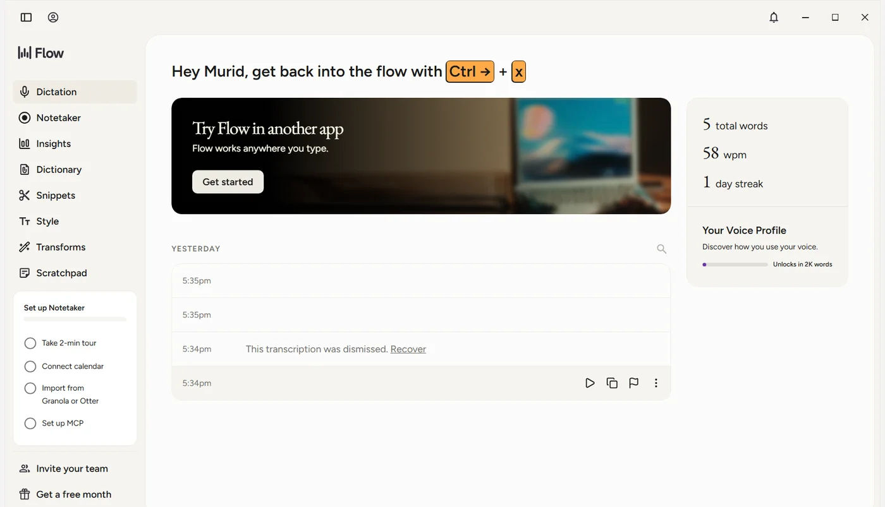
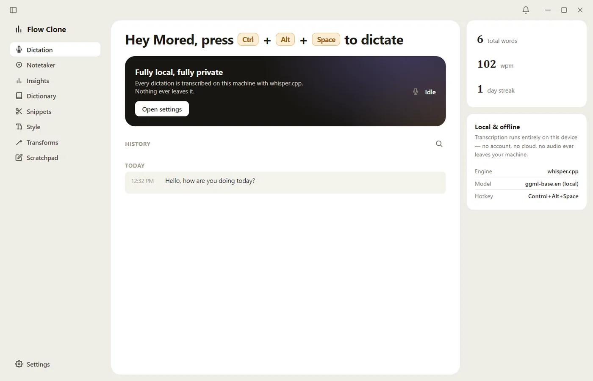

Wispr Flow is a voice dictation app. You press a shortcut, speak, and the text appears in whatever window you were typing in. I wanted to know how it does that, and whether I could build a small version of it myself.
I didn't have its source code. What I did have was the app installed on my own Windows machine. Wispr Flow is an Electron app, and its installation contains an app.asar archive with the app's bundled JavaScript. That made it a good first target for REA, an open-source toolkit that lets AI agents reverse engineer software with real analysis tools instead of guesswork.
This post covers both halves of the project. First, what the investigation found, and just as important, what it didn't. Then how I built flow-clone, a dictation app that started out sending audio to the OpenAI API and ended up doing all of its speech recognition locally with whisper.cpp.
One thing to say up front: the investigation came first and shaped how I thought about the problem, but flow-clone is not a reconstruction of Wispr Flow. I won't claim that every design choice in it came out of a specific finding.
02What is REA?
REA stands for Reverse Engineer Anything. The idea behind it is simple: rather than asking an AI agent how a program probably works, you give the agent proper analysis tools and a structured way to use them, so its conclusions rest on evidence it actually collected.
It covers a wide range of targets: JavaScript and Electron apps, native binaries, websites, .NET assemblies, Android packages, firmware and network captures. What you can do with each one depends on the target and on which analysis tools you have installed.
You can drive it through an agent integration or from the command line. I used the CLI. The project lives at morluto/rea on GitHub, and the installation guide is in its docs.
03How REA works
In practice, an investigation with REA goes like this:
Pick a target and a question. "How does this app work?" is too broad. "How does it insert text into other apps?" gives you somewhere to start.
Run the analysis that fits the target. For an Electron app, that's REA's JavaScript application workflow.
Read the evidence and narrow it down with REA's analysis views.
Sort what you found into what you can confirm, what you're inferring, and what you still don't know.
Turn the unknowns into new, smaller questions, and go around again.
How REA fits into an investigation, using this project's run as the example. The gaps on the left were recorded during the analysis, not added afterwards.
The step people tend to skip is the fourth one. Finding a string like /api/something in a bundle tells you the string exists. It doesn't tell you which server it goes to, when it's sent, or whether that code ever runs. Most of the real work happens between "the tool found X" and "X means Y".
04Investigating Wispr Flow
The questions
I pointed REA at the app.asar package of the Wispr Flow install on my own computer, with four questions in mind: how the app captures speech, how it gets a transcription, how its components talk to each other, and how it puts the finished text into another application.
Running it
Here's the analysis command, pinned to the version I used, with my local path swapped for a placeholder. I analysed Wispr Flow 1.6.1167 with rea-agents 6.5.0 on Node.js 22.
I actually typed --format json, which that version accepted too; --json is the form its README documents.
The first run stopped on an integrity mismatch in an unpacked native module, so I ran it again with --integrity-policy record-and-continue. A mismatch only means the bytes on disk didn't match what the archive declared; it doesn't prove anything was corrupted or tampered with. The second run took about ten minutes. Then I used inspect-analysis-view to get a readable summary of the evidence. I also tried REA's search command, but it failed in that session, so nothing in this post comes from it.
What came back
The summary covered 212 parsed JavaScript files, 3,511 modules and 207 IPC operations, 10 of them with literal channel names. The parts that mattered for my questions, all of them things found in the package rather than things I saw run:
Opus audio encoder workers.
Calls that write to Electron's clipboard.
A large IPC and contextBridge surface between the app's processes.
Package scripts that reference a Swift build of a native helper application.
The finding that probably wasn't
REA also turned up two API paths: /audio/transcriptions and /organization/usage/audio_transcriptions. At first this looked like the answer to question two, how the app gets its transcriptions. It probably isn't. Looked at more closely, the strings most likely come from a third-party SDK bundled into the app, and nothing else in the evidence backed them up. A search hit proves that some text exists in a file. It doesn't tell you why it's there.
Where it stopped
Coverage was partial. REA's workers ran out of memory on the main application bundle and a few other large files, and REA marked those files as unexamined instead of guessing about them. So the analysis never revealed which server the app talks to, or exactly how it inserts text on Windows.
I'm keeping this at a high level on purpose. There's no code, no internal files and no raw analysis output from Wispr Flow in this post.
05Building flow-clone
flow-clone does one thing. You press Ctrl+Alt+Space and start talking, press it again when you're done, and the text is pasted into the window you were working in. It went through three versions.
Wispr Flow · the original

flow-clone · my version

Both apps running on my computer. flow-clone's dashboard is modeled on Wispr Flow's, but only Dictation and Settings work; the other sidebar items are placeholders.
As the screenshots show, flow-clone's dashboard is modeled on Wispr Flow's: the greeting with the shortcut, the sidebar, the dictation history and the card with total words, words per minute and a daily streak. The similarity stops at the surface. Only Dictation and Settings actually work; clicking any other sidebar item just tells you the feature isn't available.
Version 1: OpenAI for transcription
The first version was the simplest thing that could work. main.js took the recorded audio, wrote it to a temporary WebM file and sent it to OpenAI's transcription API through the OpenAI SDK. The text came back, went onto the clipboard, and PowerShell's SendKeys pressed Ctrl+V. Record, transcribe, paste.
Version 2: whisper.cpp on my own machine
Next I replaced the API with whisper.cpp. The app now runs whisper-cli.exe with the English ggml-base.en model. The app's code makes no network requests, and its windows block them outright with a Content Security Policy (connect-src 'none'), so the audio stays on the computer.
That change rippled through the recording code. Instead of handing over one finished recording, an AudioWorklet collects the browser's small audio blocks into 4,096-sample chunks and sends them on while you speak. The main process converts each chunk to 16-bit PCM. Transcription itself isn't live: when you stop, the app writes a WAV file and hands it to whisper:
Running npm run setup downloads the whisper.cpp build and the model. The model file alone is about 148 MB, and its checksum matches the official one. If either one is missing, the app tells you so and doesn't start recording, so you don't talk for a minute only to get an error at the end. Later I also removed an OpenAI formatting pass I had been running over the transcripts, so what gets pasted now is whisper.cpp's output with only the surrounding spaces trimmed.
Version 3: pasting into the right place
A dictation app that pastes into the wrong window is worse than no dictation app at all. Most of the later work went into making sure that doesn't happen:
It checks the target. When you press the hotkey, the app remembers which window had focus. If no window did, or it was one of flow-clone's own, you get a message and nothing is recorded.
It verifies before pasting. Before it pastes, it brings that window back to the front and checks that this actually worked.
It keeps the transcript when pasting fails. If the original window is gone, the transcript opens in a small review window where you can edit it, insert it, copy it or try again. There's also a review mode that shows every transcript before it's pasted.
It shows you what's happening. A small status pill sits on top of other windows and shows recording, processing, success or error, without taking focus away from the app you're dictating into.
It keeps a history. The last 200 dictations are saved locally, with total words, words per minute and a daily streak calculated from them.
The bugs that taught me the most
Most of what I learned about Windows came from things going wrong:
A PowerShell console window that existed for only a split second could grab focus and swallow the paste. Every helper process now runs hidden.
Windows often ignored a background process's request to bring a window to the front. In my tests, sending an empty SendKeys first made it work much more often. I don't know exactly why, and it's no guarantee, which is why the app still checks the result.
The status pill is hidden between dictations, not destroyed, so it can appear instantly. But a hidden window still counts as open, so closing the dashboard left the app running invisibly in the background. Closing the dashboard now cleans up the other windows too.
Typing an invalid shortcut in the settings made Electron throw an error. The old shortcut had already been removed, so the global hotkey silently stopped working until a restart. A bad shortcut now falls back to the previous one.
One PowerShell call had no timeout, so a hung process could leave a dictation stuck on "processing" forever. Every helper call has one now.
To be clear about what this is: flow-clone borrows the look of Wispr Flow's dashboard, but underneath it's a much smaller, separate app with its own code. It's English-only, Windows-only, and it transcribes on your own machine.
06Architecture and trade-offs
flow-clone is a single Electron app with three windows: the dashboard, the review window and the status pill. Anything that touches the operating system lives in the main process. For the Windows-specific parts (finding the focused window, bringing it back and pressing paste), it starts short-lived, hidden PowerShell processes that call user32.dll. That avoided adding a native dependency.
flow-clone's dictation pipeline, drawn from main.js. Solid arrows are the normal path; dashed arrows are guards and fallbacks.
Cloud API or local model?
The biggest change between the first and the current version was where speech recognition happens.
Version 1
Current version
Transcription
OpenAI transcription API
Local whisper.cpp (ggml-base.en)
Where audio goes
To a cloud service
Stays on the computer
Audio handling
Finished recording saved as WebM
Chunks over IPC, converted to PCM, saved as WAV
Setup
An API key
npm run setup for the binary and model
Pasting
Clipboard and Ctrl+V
Same, but only after the target window is verified
Extras
None
Review window, status pill, history and statistics
Running the model locally means no transcription service to depend on once setup is done, and no audio sent anywhere to be recognised. It also means new work: someone has to download and ship a model, local inference has to run fast enough on the user's hardware, and the runtime has to be supported on every platform you care about.
Pasting into another app
Putting text on the clipboard is easy. Getting it into the right window is the hard part, because between pressing the hotkey and pasting, that window can close, lose focus or end up behind something else. So flow-clone brings back the window it noted at the start, and checks that Windows really made it the foreground window:
If that check fails, nothing is pasted. The error sends the transcript to the review window instead:
main.js · shortened
async functionpasteText(text, target) {
const focusResult = awaitfocusTarget(target)
if (!focusResult.ok) {
const err = newError(`Target window unavailable (${focusResult.reason})`)
err.code = 'TARGET_UNAVAILABLE'throw err
}
…
clipboard.writeText(text)
try {
awaitsendPasteKeystroke()
} finally {
// Give the target app time to read the clipboard before we restore it.awaitdelay(500)
…
}
}
This approach has limits. It depends on Windows APIs and PowerShell, so it won't run on macOS or Linux. And because it pastes through the clipboard, it briefly replaces whatever you had copied. flow-clone saves and restores plain text only, so anything else you had copied, such as an image, is replaced.
07What I learned
A search hit is a question, not an answer
The API paths were the clearest example. They looked like exactly what I was searching for, and on a closer look they told me nothing about how Wispr Flow transcribes speech. Now I read the code around a match before I believe anything about it.
Write down what failed
The failed search, the memory limits and the files REA couldn't examine were as useful as the findings. They showed exactly where the evidence ran out, and they kept me from filling those gaps with guesses.
Understanding a design is not copying it
I never needed to reproduce Wispr Flow's internals. Knowing the broad shape of the problem (capture, transcribe, insert) was enough to build my own version and make my own decisions.
Agents are fast, so verification matters more
AI agents make both the investigation and the coding faster. They also make it easy to write a confident summary that mixes up what a tool observed with what someone assumed. Keeping those two apart was most of the discipline in this project.
08Try it yourself
If you want to try something similar, this is the order I'd go in:
Pick software you're allowed to inspect.
Follow REA's installation guide, and check the Node.js version and any tools your target needs.
Run the workflow that fits your target, and pin the REA version so your results can be reproduced. Electron apps have their own workflow; other targets may need other tools.
Keep the output, and for every conclusion note the evidence behind it, including the steps that failed.
Build a small prototype around one feature you can clearly define.
Test it on its own terms, and write down how it differs from the original.
Respect the software you're looking at: its license, its terms of service, and the privacy of its users. Having a copy of an app doesn't automatically mean every kind of reverse engineering is allowed; that depends on the license and on the law where you live. Review REA's source and permissions before you install it, as you would with any tool. And when you write about what you did, share your method and the high-level findings, not someone else's code or large dumps of raw analysis output.
09Conclusion
I started with a question about someone else's app and ended up with an app of my own. REA gave me a real map of Wispr Flow's Electron package: what was there, what was likely, and where the evidence stopped. flow-clone grew from a three-step script around a cloud API into a local whisper.cpp app that checks where it pastes and keeps your transcript when pasting fails.
Reverse engineering didn't hand me a clone. What it gave me was a clear picture of the problem, and that turned out to be enough to start building.
Project
flow-clone, a local prototype (source not published)